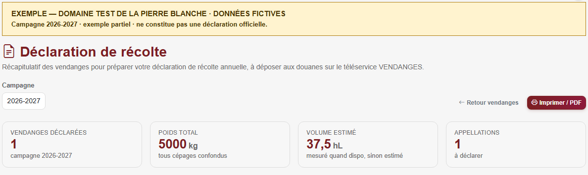

Accueil › Actualités réglementaires › Douane & déclarations › Déclaration de récolte
Déclaration de récolte 2026 : dates et mode d'emploi
Les vendanges à peine rentrées, une échéance approche déjà : la déclaration de récolte et de production, à valider en ligne au plus tard le 10 décembre 2026 pour les récoltants et bailleurs vinificateurs relevant du circuit douanier de droit commun. Elle décrit votre récolte et votre production : ces données sont à rapprocher de vos enregistrements de cave et des démarches de revendication applicables à vos vins.
Champagne, Alsace, Cognac, Val de Loire : des circuits particuliers existent. Retrouvez votre interprofession et les consignes de déclaration.
L'essentiel
- Les récoltants commercialisant leur récolte ou leur production sont concernés ; la Douane prévoit des dispenses, notamment en l’absence de récolte ou de commercialisation.
- Dans le circuit douanier, dépôt en ligne via VENDANGES. Les ressortissants CIVC, CIVA et les récoltants BNIC passent par leur interprofession ; InterLoire offre aussi une possibilité de dépôt.
- Droit commun : 10 décembre 2026 à 23 h 59 pour les récoltants et bailleurs vinificateurs ; 10 janvier 2027 à 23 h 59 pour la production des caves coopératives et négociants-vinificateurs. En Champagne : voir l’échéance du 5 novembre dans la fiche CIVC.
- Un brouillon VENDANGES ne vaut pas dépôt. Dans ce téléservice, la déclaration déposée reste modifiable jusqu’au 31 juillet 2027 ; cela ne prolonge pas le délai du premier dépôt.
Ce que contient la déclaration
Pour chaque catégorie de produit (appellation, couleur…) : les superficies en production, les quantités récoltées et leur destination : vinification au domaine, apport en cave coopérative, vente de raisins ou de moûts, quantités livrées à la distillation. En métayage, distinguez votre rôle d’exploitant ou de bailleur vinificateur et renseignez les rubriques correspondantes du téléservice. Préparez vos chiffres à l'avance : pesées d'encuvage, bons d'apport, contrats de vente de raisins.
Pour les rubriques à remplir selon votre situation, consultez le manuel officiel VENDANGES 2026 pour les récoltants et récoltants vinificateurs (PDF).
Récolte, revendication et DRM : garder des données cohérentes
Rapprochez les quantités déclarées de vos enregistrements de vendange et de votre comptabilité matière. Pour une AOC, la déclaration de revendication possède ses propres modalités et délais, définis dans le cahier des charges. Le dépôt de la récolte et cette revendication sont deux démarches à distinguer, comme le rappelle le Code rural, article D644-5. Préparez également les données utiles à vos DRM selon le circuit applicable.
Anticiper l’échéance de votre circuit de déclaration
- Vérifiez vos accès au portail douanier ou à votre interprofession dès maintenant : un mot de passe perdu se règle mal dans l'urgence.
- Rapprochez vos volumes des pesées réelles avant de saisir : dans VENDANGES, une déclaration déposée peut être modifiée dans les délais prévus. Pour un portail interprofessionnel, consultez ses propres règles.
- Gardez la cohérence avec le casier viticole : rapprochez les superficies déclarées de vos parcelles en production et vérifiez les écarts avant le dépôt.
Déclaration de récolte : trouver votre interprofession
Voici les organismes répertoriés dans l’annuaire des interprofessions vinicoles du CNIV, avec les repères utiles pour votre récolte. Cliquez sur votre vignoble ou votre production pour afficher les démarches et les sources. Vous pouvez ouvrir plusieurs interprofessions pour les comparer.
Comment lire ces fiches ? Les consignes de campagne sont attribuées à leur auteur ; un lien vers le site d’une interprofession sert à retrouver son organisme et ses contacts. Lorsqu’aucun calendrier local 2026 n’est confirmé ici, consultez les consignes de votre espace professionnel. Les dates de droit commun ci-dessus concernent le circuit douanier ; les modalités d’un autre portail ne se déduisent pas de celles de VENDANGES.
Champagne — CIVC / Comité Champagne
CIVC — Comité interprofessionnel du vin de Champagne
Document de campagne 2026
Décision du Comité Champagne reproduite dans un avis public ; modalités sur extranet. Sources consultées le 27 octobre 2026.
En Champagne, la déclaration de récolte passe par le Comité Champagne. La décision V.2.2026 du 22 juillet 2026 fixe son dépôt au 5 novembre 2026 au plus tard. Elle distingue cette formalité de la déclaration d’approvisionnement et de production, attendue au plus tard le 10 décembre 2026.
Consultez les circulaires de campagne dans votre extranet pour les modalités applicables et les éventuelles mises à jour. N’attendez donc pas l’échéance générale de décembre pour vérifier votre situation.
Sources et accès : Extranet officiel du Comité Champagne (accès réservé) ; Décision V.2.2026 du Comité Champagne, avis du 27 juillet 2026 reproduit par Le Figaro Entreprises ; Douane : exception CIVC au circuit VENDANGES.
Retour à la liste des interprofessionsAlsace — CIVA
CIVA — Comité interprofessionnel des vins d’Alsace
Calendrier à vérifier sur votre espace professionnel
Circuit confirmé ; calendrier local 2026 non vérifié publiquement. Sources consultées le 27 octobre 2026.
Pour les ressortissants du CIVA, le dépôt s’effectue auprès de l’interprofession, sur le portail VinsAlsace.pro, et non dans VENDANGES. Vérifiez les consignes de récolte 2026 dans votre espace professionnel.
La déclaration de récolte CIVA et la déclaration de revendication auprès de l’AVA sont deux démarches à distinguer. La documentation AVA explique cette articulation ; son guide 2025 ne doit pas servir de calendrier pour la récolte 2026.
Sources et accès : Portail professionnel du CIVA (accès réservé) ; CIVA : contact officiel ; Douane : exception CIVA ; AVA : articulation DR et revendication, document 2025 (PDF).
Retour à la liste des interprofessionsCognac — BNIC
BNIC — Bureau national interprofessionnel du Cognac
Calendrier à vérifier sur votre espace professionnel
Circuit confirmé ; calendrier et modifications locaux à contrôler sur extranet. Sources consultées le 27 octobre 2026.
Les récoltants ressortissants du BNIC déclarent auprès de leur interprofession. L’entrée professionnelle est l’extranet eBNIC, accessible depuis pro.cognac.fr.
Pour la récolte 2026, consultez le calendrier et les règles de validation de cet espace avant de déposer. La possibilité de modifier une déclaration dans VENDANGES jusqu’au 31 juillet suivant ne doit pas être transposée automatiquement au portail BNIC.
Sources et accès : Extranet professionnel eBNIC (accès réservé) ; BNIC : organisme et missions ; Douane : circuit de déclaration des récoltants BNIC.
Retour à la liste des interprofessionsVal de Loire — InterLoire
InterLoire — Interprofession des vins du Val de Loire
Document de campagne 2026
Consignes professionnelles de campagne ; vérifiez aussi les consignes de votre ODG. Sources consultées le 27 octobre 2026.
Les ressortissants d’InterLoire peuvent déposer dans VENDANGES ou sur le portail de leur interprofession. Les conditions d’utilisation de vinsdeloire.pro prévoient des formulaires de déclaration de récolte et de production.
Les Vignerons Indépendants du Centre Val de Loire rappellent pour 2026 l’échéance du 10 décembre et présentent la saisie sur vinsdeloire.pro lorsque la récolte comporte uniquement des vins du ressort d’InterLoire. En cas de plusieurs productions, vérifiez le circuit adapté avant de saisir. Le Centre-Loire / BIVC possède ses propres outils : voir sa fiche ci-dessous.
Sources et accès : InterLoire : fonctions du portail déclaratif ; Vignerons Indépendants Centre Val de Loire : consignes récolte 2026 ; Douane : option de dépôt InterLoire.
Retour à la liste des interprofessionsVin De France — ANIVIN de France
ANIVIN de France — Association nationale interprofessionnelle des vins de France
Repère : règle générale des Douanes
Aucun calendrier local de récolte 2026 spécifique n’est confirmé dans cette fiche. Règle nationale et distinction certification/volumes vérifiées. Sources consultées le 27 octobre 2026.
Pour la récolte relevant du circuit douanier, utilisez VENDANGES. Les déclarations de volumes demandées par l’ANIVIN de France constituent une obligation interprofessionnelle distincte.
Si vous commercialisez du Vin De France avec mention de cépage ou de millésime, consultez aussi les démarches de certification de FranceAgriMer. Une déclaration de récolte ne tient pas lieu de certification.
Sources et accès : ANIVIN de France : réglementation et déclaration des volumes ; FranceAgriMer : démarches VSIG avec cépage ou millésime ; Douane : circuit VENDANGES.
Retour à la liste des interprofessionsArmagnac — BNIA
BNIA — Bureau national interprofessionnel de l’Armagnac
Repère : règle générale des Douanes
Aucun calendrier local de récolte 2026 spécifique n’est confirmé dans cette fiche. Règle nationale ; aucun calendrier Armagnac 2026 spécifique affirmé. Sources consultées le 27 octobre 2026.
La récolte de raisins et le suivi des eaux-de-vie d’Armagnac sont des formalités distinctes. Pour la déclaration de récolte relevant du droit commun, reportez-vous au circuit VENDANGES décrit plus haut.
Rapprochez-vous du BNIA pour les formalités propres à l’Armagnac, notamment le suivi des stocks et mouvements d’eaux-de-vie. Ne déduisez pas de la proximité des sigles BNIA et BNIC qu’ils utilisent le même portail de récolte.
Sources et accès : BNIA : espace professionnel ; Légifrance : suivi des stocks et mouvements d’Armagnac ; Douane : déclaration de récolte, règle générale.
Retour à la liste des interprofessionsBeaujolais — Inter Beaujolais
Inter Beaujolais — Interprofession des vins AOC du Beaujolais
Repère : règle générale des Douanes
Aucun calendrier local de récolte 2026 spécifique n’est confirmé dans cette fiche. Règle nationale ; aucune date de sortie primeur non vérifiée ajoutée. Sources consultées le 27 octobre 2026.
La déclaration de récolte relève du circuit VENDANGES de droit commun. Pour un vin nouveau ou primeur, vérifiez séparément les formalités de revendication et de mise en marché de votre appellation : la date de dépôt de la récolte ne suffit pas à déterminer la date de commercialisation.
L’extranet d’Inter Beaujolais fournit notamment les coordonnées du service douanier de la viticulture.
Sources et accès : Inter Beaujolais : service douanier de la viticulture ; Douane : déclaration de récolte.
Retour à la liste des interprofessionsBergerac et Duras — IVBD
IVBD — Interprofession des vins de Bergerac et Duras
Document de campagne 2026
Consignes de la fédération des vins de Bergerac et Duras, attribuées dans les sources. Sources consultées le 27 octobre 2026.
Le dépôt de la récolte passe par VENDANGES. La Fédération des vins de Bergerac et Duras consacre une rubrique à la récolte 2026, avec une fiche d’information sur ce téléservice et les conditions de production du millésime.
Utilisez ces documents de la fédération de producteurs pour préparer les quantités et appellations, puis vérifiez séparément la revendication. L’IVBD et la fédération sont deux organismes à distinguer.
Sources et accès : Fédération des vins de Bergerac et Duras : récolte et fiches 2026 ; Vins de Bergerac et Duras : site de l’interprofession ; Douane : VENDANGES.
Retour à la liste des interprofessionsBordeaux — CIVB
CIVB — Conseil interprofessionnel du vin de Bordeaux
Document de campagne 2026
Échéances publiées par la FGVB ; consultez les modalités applicables à vos vins. Sources consultées le 27 octobre 2026.
À Bordeaux, la FGVB confirme pour 2026 le dépôt dans VENDANGES. Sa communication du 15 septembre rappelle le 10 décembre 2026 pour les récoltants et bailleurs vinificateurs, et le 10 janvier 2027 pour la production des caves coopératives et négociants-vinificateurs.
Ces consignes proviennent de la Fédération des grands vins de Bordeaux, à distinguer du CIVB. Les démarches de votre ODG restent à vérifier pour la revendication.
Sources et accès : FGVB : ouverture et échéances VENDANGES 2026 ; Bordeaux.com : identification officielle du CIVB.
Retour à la liste des interprofessionsBourgogne — BIVB
BIVB — Bureau interprofessionnel des vins de Bourgogne
Document de campagne 2026
Accompagnement et tutoriels de campagne de la CAVB ; pas de calendrier universel déduit. Sources consultées le 27 octobre 2026.
La CAVB publie des tutoriels 2026 pour enregistrer la déclaration de récolte dans VENDANGES et préparer les formalités sur Déclar’AOC. Consultez-les dans cet ordre pour éviter de confondre les deux outils.
Son information du 7 octobre 2026 annonce aussi une assistance aux déclarations et une échéance au 10 décembre 2026 pour la télédéclaration de production sur Déclar’AOC. La CAVB accompagne les producteurs ; elle ne se confond pas avec le BIVB.
Sources et accès : CAVB : tutoriels VENDANGES et Déclar’AOC 2026 ; CAVB : accompagnement et échéance 2026 ; BIVB : site officiel des vins de Bourgogne.
Retour à la liste des interprofessionsCahors et Côtes du Lot — UIVCCL / UIVC
UIVCCL — Union interprofessionnelle du vin de Cahors et des Côtes du Lot (anciennement UIVC)
Repère : règle générale des Douanes
Aucun calendrier local de récolte 2026 spécifique n’est confirmé dans cette fiche. Nom et périmètre 2025–2027 vérifiés ; droit commun pour la DR. Sources consultées le 27 octobre 2026.
La déclaration de récolte suit le circuit VENDANGES de droit commun. L’accord interprofessionnel 2025–2027 utilise le nom UIVCCL et couvre l’AOP Cahors ainsi que l’IGP Côtes du Lot ; l’ancien sigle UIVC reste présent sur certains supports.
Préparez vos données en distinguant les produits et vérifiez les consignes de l’organisme compétent pour chaque revendication.
Sources et accès : Légifrance : accord UIVCCL 2025–2027 ; Vins de Cahors : espace professionnel ; Douane : circuit de récolte.
Retour à la liste des interprofessionsCentre-Loire — BIVC
BIVC — Bureau interprofessionnel des vins du Centre
Repère : règle générale des Douanes
Aucun calendrier local de récolte 2026 spécifique n’est confirmé dans cette fiche. Outils locaux distingués ; pas de transposition du calendrier InterLoire. Sources consultées le 27 octobre 2026.
Le BIVC / Centre-Loire ne doit pas être confondu avec InterLoire. Pour le dépôt douanier de récolte, suivez le circuit VENDANGES de droit commun.
Le guide des plateformes du BIVC distingue son portail DRM de la plateforme des ODG et de la FUVC, qui comporte notamment des démarches de récolte et de revendication. Ce guide aide à identifier les outils ; il ne constitue pas un calendrier de campagne 2026.
Sources et accès : BIVC : guide des plateformes déclaratives (PDF) ; BIVC : espace professionnel (accès réservé) ; Douane : dépôt dans VENDANGES.
Retour à la liste des interprofessionsCorse — CIV Corse
CIV Corse — Conseil interprofessionnel des vins de Corse
Repère : règle générale des Douanes
Aucun calendrier local de récolte 2026 spécifique n’est confirmé dans cette fiche. Identité locale et règle nationale ; calendrier local 2026 non confirmé. Sources consultées le 27 octobre 2026.
Pour la récolte soumise au droit commun, le dépôt se fait dans VENDANGES. Le CIV Corse présente sur son site le rôle de l’interprofession et un accès à son espace professionnel.
Avant la saisie, séparez les volumes par produit et vérifiez auprès de votre ODG les formalités propres à l’AOP ou à l’IGP concernée.
Sources et accès : CIV Corse : organisation et espace professionnel ; Douane : règle de dépôt.
Retour à la liste des interprofessionsJura — CIVJ
CIVJ — Comité interprofessionnel des vins du Jura
Repère : règle générale des Douanes
Aucun calendrier local de récolte 2026 spécifique n’est confirmé dans cette fiche. Identité confirmée par CNIV ; contenu du site CIVJ non consultable dans notre outil. Sources consultées le 27 octobre 2026.
Pour le dépôt douanier de récolte, utilisez VENDANGES selon la règle générale. Le CIVJ est le repère interprofessionnel des vins du Jura dans l’annuaire du CNIV.
La revendication et les autres formalités de votre appellation demandent une vérification distincte auprès de l’ODG. Consultez ses consignes 2026 avant de reprendre une date trouvée dans un ancien guide.
Sources et accès : CNIV : identification du CIVJ et de son site ; CIVJ : site officiel ; Douane : circuit VENDANGES.
Retour à la liste des interprofessionsLanguedoc — CIVL
CIVL — Conseil interprofessionnel des vins du Languedoc
Repère : règle générale des Douanes
Aucun calendrier local de récolte 2026 spécifique n’est confirmé dans cette fiche. Identité/périmètre et règle nationale ; aucun délai local inventé. Sources consultées le 27 octobre 2026.
La déclaration de récolte relève du circuit VENDANGES de droit commun. Le CIVL présente les AOP et IGP de son ressort sur son site institutionnel.
Ne choisissez pas votre organisme sur le seul nom du département : identifiez le produit et l’ODG figurant dans vos documents. Les vins Pays d’Oc relèvent d’Inter Oc, présenté dans une fiche distincte.
Sources et accès : CIVL : présentation et vins de son ressort ; Douane : récolte et production.
Retour à la liste des interprofessionsPays d’Oc IGP — Inter Oc
Inter Oc — Interprofession des vins Pays d’Oc IGP
Repère : règle générale des Douanes
Aucun calendrier local de récolte 2026 spécifique n’est confirmé dans cette fiche. Identité et règle nationale ; calendrier de revendication non extrapolé. Sources consultées le 27 octobre 2026.
Le dépôt douanier de récolte passe par VENDANGES. Identifiez séparément les volumes destinés à Pays d’Oc IGP et consultez les consignes de l’organisme compétent pour leur revendication.
Le site officiel Pays d’Oc est le point de repère pour identifier le label et ses interlocuteurs. Ne déduisez pas un délai de revendication 2026 d’une ancienne campagne.
Sources et accès : Pays d’Oc IGP : site officiel ; Douane : dépôt de récolte.
Retour à la liste des interprofessionsPineau des Charentes — CNPC
CNPC — Comité national interprofessionnel du Pineau des Charentes
Calendrier à vérifier sur votre espace professionnel
Fonction CNPC vérifiée ; renvoi BNIC conditionnel, sans assimiler tous les producteurs. Sources consultées le 27 octobre 2026.
L’extranet du CNPC met à disposition le formulaire de déclaration de revendication. Ce document ne doit pas être confondu avec la déclaration de récolte.
Si votre exploitation relève du BNIC, reportez-vous au circuit de récolte eBNIC décrit plus haut et vérifiez les productions à y déclarer. Pour la revendication du Pineau, consultez les consignes de votre organisme compétent ; n’utilisez pas automatiquement la date d’une autre démarche.
Sources et accès : CNPC : extranet et formulaire de revendication ; Douane : circuit des récoltants ressortissants du BNIC.
Retour à la liste des interprofessionsProvence — CIVP
CIVP — Conseil interprofessionnel des vins de Provence
Repère : règle générale des Douanes
Aucun calendrier local de récolte 2026 spécifique n’est confirmé dans cette fiche. Circuit corroboré par le calendrier CIVP ; aucun délai DREV non vérifié ajouté. Sources consultées le 27 octobre 2026.
Le calendrier vitivinicole des Vins de Provence renvoie à VENDANGES pour la déclaration de récolte et de production. Il précise que l’ancien service RECOLTE ne reçoit plus les nouveaux dépôts depuis la récolte 2025.
La déclaration de revendication constitue une autre étape. Vérifiez son délai auprès de votre ODG avant une première commercialisation.
Sources et accès : Vins de Provence : fiche de déclaration de récolte et production ; Douane : service VENDANGES.
Retour à la liste des interprofessionsVallée du Rhône — Inter Rhône
Inter Rhône — Interprofession des vins AOC Côtes du Rhône et Vallée du Rhône
Repère : règle générale des Douanes
Aucun calendrier local de récolte 2026 spécifique n’est confirmé dans cette fiche. Identité et distinction DRM/DR ; pas de calendrier local 2026 affirmé. Sources consultées le 27 octobre 2026.
La récolte suit le circuit VENDANGES de droit commun. Inter Rhône propose un espace adhérent pour ses informations professionnelles.
Declarvins est présenté par les interprofessions comme un outil de DRM et de contrats. Son utilisation pour ces démarches ne remplace pas, à elle seule, le dépôt de votre déclaration de récolte.
Sources et accès : Inter Rhône : site officiel et accès adhérent ; Brochure institutionnelle : rôle de Declarvins pour DRM et contrats (PDF) ; Douane : dépôt de récolte.
Retour à la liste des interprofessionsRoussillon — CIVR
CIVR — Conseil interprofessionnel des vins du Roussillon
Repère : règle générale des Douanes
Aucun calendrier local de récolte 2026 spécifique n’est confirmé dans cette fiche. Identité/périmètre et règle nationale ; aucune date locale 2026 extrapolée. Sources consultées le 27 octobre 2026.
Le dépôt douanier de récolte s’effectue dans VENDANGES selon le droit commun. Le site du CIVR permet d’identifier l’interprofession et les vins de son ressort.
Pour préparer la saisie, distinguez vos produits et vérifiez auprès de l’ODG les démarches de revendication. Une échéance de commercialisation d’un vin particulier ne remplace pas la date de dépôt de récolte.
Sources et accès : CIVR : présentation officielle ; Douane : déclaration de récolte.
Retour à la liste des interprofessionsSavoie — CIVS
CIVS — Comité interprofessionnel des vins de Savoie
Repère : règle générale des Douanes
Aucun calendrier local de récolte 2026 spécifique n’est confirmé dans cette fiche. Identité et lien actuel vérifiés ; aucune date de revendication affirmée. Sources consultées le 27 octobre 2026.
La déclaration de récolte suit le circuit VENDANGES de droit commun. Le CIVS fournit sur son site actuel les coordonnées de l’interprofession.
Avant de déclarer, identifiez précisément l’appellation ou l’IGP de chaque volume et vérifiez les consignes de revendication auprès de l’ODG concerné. Une recherche « vins de Savoie » ne suffit pas à déterminer toutes les démarches applicables.
Sources et accès : CIVS : contact officiel actuel ; Douane : circuit de récolte.
Retour à la liste des interprofessionsSud-Est, vins IGP — Intervins Sud-Est
IVSE — Intervins Sud-Est
Repère : règle générale des Douanes
Aucun calendrier local de récolte 2026 spécifique n’est confirmé dans cette fiche. Identité et fonctions Declarvins ; pas de seuil de réserve ancien transposé. Sources consultées le 27 octobre 2026.
Pour la déclaration de récolte relevant du droit commun, utilisez VENDANGES. Intervins Sud-Est dispose d’un site officiel avec un espace adhérent et les dénominations de son ressort.
La plateforme commune Declarvins concerne notamment les DRM et les contrats. Distinguez ces opérations du dépôt de récolte et des démarches de revendication propres à votre IGP.
Sources et accès : Intervins Sud-Est : site officiel et espace adhérent ; Brochure institutionnelle : fonctions de Declarvins (PDF) ; Douane : service de récolte.
Retour à la liste des interprofessionsSud-Ouest — IVSO
IVSO — Interprofession des vins du Sud-Ouest
Repère : règle générale des Douanes
Aucun calendrier local de récolte 2026 spécifique n’est confirmé dans cette fiche. Identité via le site actuel ; règle nationale appliquée sans englober tous les produits du Sud-Ouest. Sources consultées le 27 octobre 2026.
Pour les récoltes relevant du circuit douanier de droit commun, le dépôt s’effectue dans VENDANGES. L’IVSO est l’éditeur du site Vignobles du Sud-Ouest.
Identifiez l’interprofession et l’ODG de chaque produit plutôt que de retenir seulement « Sud-Ouest » : l’Armagnac, Bergerac-Duras et Cahors / Côtes du Lot ont leurs propres organismes, présentés séparément dans ce guide.
Sources et accès : Vignobles du Sud-Ouest : identité officielle de l’IVSO ; Douane : règle de dépôt de récolte.
Retour à la liste des interprofessionsVotre checklist avant de déclarer la récolte 2026
Une liste de préparation à garder sous la main, à adapter à votre situation et à votre circuit de déclaration.
- Accès et circuit. Vérifiez votre CVI, votre habilitation et le portail compétent : VENDANGES ou votre circuit interprofessionnel. Notez votre échéance de dépôt.
- Parcelles et produits. Rassemblez les superficies en production et les références des parcelles ; contrôlez les appellations, couleurs et codes produits applicables.
- Quantités et justificatifs. Rapprochez les pesées, bons d’apport et volumes de cave. Distinguez les volumes mesurés des estimations : un coefficient de conversion ne suffit pas à établir un volume officiel.
- Destination de la récolte. Distinguez vinification au domaine, apports, ventes de raisins ou de moûts et autres destinations selon les rubriques qui vous concernent ; gardez les justificatifs.
- Situations particulières. Le cas échéant, préparez achats de vendanges, répartition par site et données de métayage. Vérifiez vos obligations de revendication auprès de votre ODG, séparément de la récolte.
- Contrôle avant dépôt. Relisez les totaux et leur cohérence avec vos enregistrements de cave. Faites confirmer les informations manquantes ou incertaines avant de déposer sur le portail compétent.
- Après le dépôt. Conservez la déclaration déposée et les éléments de confirmation du portail. Dans VENDANGES, vérifiez l’état « déposée » : un brouillon ne vaut pas dépôt.
Télécharger la checklist (PDF, 1 page, 65 Ko)
Liste éditoriale Mon Chai, préparée à partir du manuel VENDANGES 2026 des Douanes (accès, saisie, récapitulatif et dépôt), complétée par les distinctions réglementaires sourcées dans cet article. Elle ne remplace pas les consignes de votre portail.
Voir un récapitulatif préparé dans Mon Chai
Voici le véritable écran de préparation du logiciel, avec les données fictives du domaine test de la Pierre Blanche. L’exemple partiel de la campagne 2026-2027 contient une réception de 5 000 kg et un volume estimé à 37,5 hL avec un coefficient de 0,75 L/kg.

Télécharger l’exemple de récapitulatif (PDF, 2 pages, 151 Ko)
Ce que cet exemple montre : un regroupement des vendanges par appellation, cépage et parcelle, avec des volumes mesurés ou estimés et un document imprimable. Il signale aussi un code produit douanier à compléter : l’exemple est volontairement incomplet. Les codes produits, superficies et quantités restent à vérifier avant votre déclaration.
Ce document est préparatoire. Il ne constitue ni un formulaire officiel, ni un fichier de télédéclaration, ni une preuve de dépôt. Le dépôt s’effectue sur VENDANGES ou sur le portail interprofessionnel compétent.
Préparez votre déclaration avec vos données de vendange
Mon Chai regroupe les vendanges enregistrées pour la campagne et propose un récapitulatif de préparation imprimable. Contrôlez les quantités, les éventuelles estimations et les informations manquantes, puis reportez les données nécessaires dans votre déclaration. Le dépôt officiel s’effectue sur VENDANGES ou auprès de votre interprofession, selon votre situation.
Sources nationales et vérification
Repères vérifiés le . Les références propres à chaque organisme figurent dans sa fiche. Les dépôts de récolte, de production, de revendication et les DRM sont des démarches à distinguer. Consultez les consignes de campagne les plus récentes de la Douane ou de votre organisme avant le dépôt.